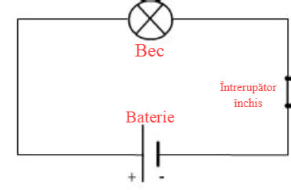
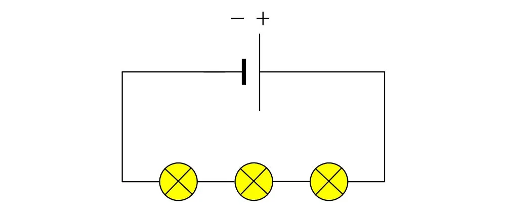
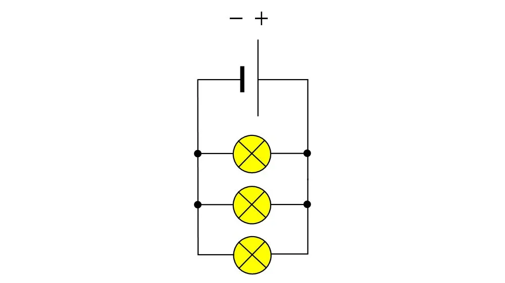

Lecția 6 – Generatoare, consumatori, circuite electrice
„Fizica nu este o materie dominată de formule, ci de logică"
1. Generatorul electric
Generatorul electric este sursa care pune la dispoziție energia necesară pentru funcționarea circuitului.
Exemple simple: bateria, acumulatorul, pila, unele celule fotovoltaice.
- Pile și baterii - furnizează curent continuu
- Alternatoare - furnizează curent alternativ
- Celule solare - transformă lumina în electricitate
- Dinamuri - transformă mișcarea în electricitate
2. Consumatorul electric
Consumatorul transformă energia electrică în alt tip de energie.
- Consumatori termici - aragaz, radiator, calorifер
- Consumatori luminosi - bec, LED, lampă
- Consumatori mecanici - motor, ventilator
- Consumatori electronici - calculator, televizor
3. Ce este un circuit electric
Un circuit electric este un ansamblu de elemente conectate astfel încât curentul electric să poată circula.
Pentru ca un bec să lumineze, circuitul trebuie să fie închis.
- Generator - furnizează energia
- Conductori - transportă curentul (fire de cupru)
- Consumatori - utilizează curentul
- Întrerupător - deschide/închide circuitul
- Circuit deschis - curentul NU circulă (becul nu luminează)
- Circuit închis - curentul circulă (becul luminează)
4. Circuit electric simplu
Circuitul cel mai simplu conține: o baterie, un fir conductor și un bec.

- Bateria furnizează energia electrică
- Firul de cupru transportă curentul
- Becul consumă energia și luminează
- Circuitul este închis, deci curentul circulă
5. Circuit electric în serie
Într-un circuit în serie, consumatorii sunt conectați după aceluși drum. Dacă un bec se defectează, tot circuitul se oprește.

- Un singur drum pentru curent
- Aceeași intensitate de curent în toate punctele
- Dacă se defectează un element, circuitul se întrerupe
- Becurile strălucesc mai slab (tensiune distribuită)
6. Circuit electric în paralel
Într-un circuit în paralel, consumatorii sunt conectați pe drumuri diferite. Dacă un bec se defectează, celelalte continuă să funcționeze.

- Mai multe drumuri pentru curent
- Tensiune egală la fiecare ramură
- Dacă se defectează un element, celelalte rămân funcționale
- Becurile strălucesc mai strălucitor
- Se folosește în locuințe și școli
7. Comparație: Serie vs Paralel
| Caracteristică | Circuit în Serie | Circuit în Paralel |
|---|---|---|
| Drumuri | Un singur drum | Mai multe drumuri |
| Curent | Aceeași în toate punctele | Se împarte la fiecare ramură |
| Tensiune | Se distribuie între elemente | Aceeași la fiecare ramură |
| Defectare | Totul se oprește | Restul continuă |
| Strălucire | Becurile mai slabe | Becurile mai strălucitoare |
| Utilizare | Rar (copaci de Crăciun) | Obișnuit (casă, școală) |
8. Exemple de circuite
Într-o lanternă, într-un clopoțel electric sau într-o jucărie cu baterii găsim circuite electrice simple.
În locuință și în școală întâlnim circuite mai complexe, dar bazate pe aceleași idei de bază.
- Lanternă - circuit simplu (baterie + bec)
- Clopoțel electric - circuit simplu cu electromagnet
- Locuință - circuite complexe în paralel
- Copac de Crăciun - poate fi serie sau paralel
- Mașină - circuite multiple în paralel
Reține
- Generatorul furnizează energia necesară circuitului
- Consumatorul folosește energia electrică
- Curentul circulă doar într-un circuit închis
- Circuit simplu = baterie + fir + consumator
- Circuit în serie = o cale, dacă se defectează ceva, se oprește tot
- Circuit în paralel = mai multe căi, folosit în case și școli
- Multe aparate din viața de zi cu zi funcționează cu ajutorul circuitelor electrice
Navigare
Butonul „Mergi mai departe" te duce direct la lecția următoare.